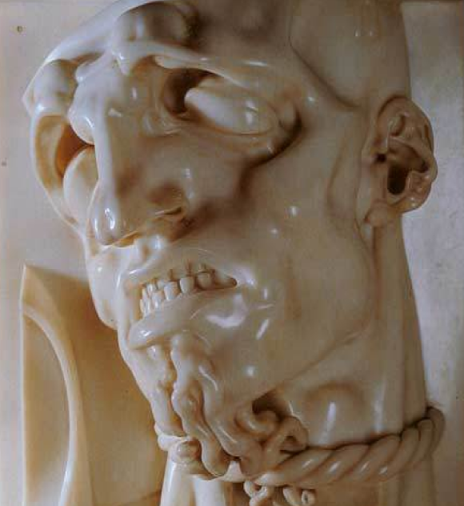
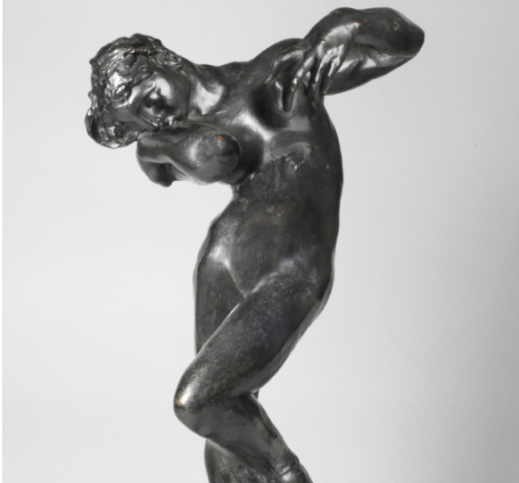
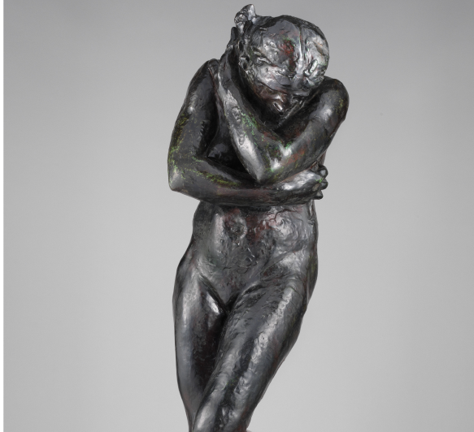

La scultura, può avere un impatto significativo sulla psicologia umana, sia per l'artista che per lo spettatore. La connessione tra scultura e psicologia può essere esplorata da diverse prospettive, come quella dell’espressione dell’artista, la scultura offre agli artisti una modalità espressiva unica per comunicare le proprie emozioni, pensieri e idee.
L’uso della materialità e tattilità: La scultura è una forma d'arte fisica e tattile, il che significa che il fruitore può sperimentarla attraverso il senso del tatto.
La possibilità di toccare una scultura e di percepirne la struttura, la forma e la consistenza può creare un legame più intimo tra l'opera d'arte e lo spettatore.
Il Simbolismo e psicologia dell'inconscio: Alcune sculture possono contenere simboli o allegorie che risuonano con l'inconscio collettivo dell'umanità. I simboli archetipici presenti in alcune opere possono toccare aspetti universali dell'esperienza umana, collegandosi alle nostre emozioni e al nostro senso di identità.
Adolfo Wildt (1868-1931) è stato uno scultore italiano, benché non esistano evidenze dirette riguardo alla sua formazione o interesse specifico per la psicologia, alcune interpretazioni delle sue opere possono suggerire un potenziale legame con la psiche umana.
Come per molti artisti dell'espressionismo, l'opera di Wildt può essere interpretata alla luce dei movimenti culturali e artistici del suo tempo, che erano spesso influenzati dai pensieri e dalle teorie psicologiche emergenti del periodo.
Il Prigione

Rappresenta una figura maschile in una posizione contratta, con braccia incrociate e mani incatenate. Questa scultura evoca un senso di oppressione e limitazione della libertà, suscitando diverse interpretazioni e connessioni con la psicologia dell'arte.
La scultura potrebbe essere interpretata come un'espressione dell'inconscio dell'artista o di una dimensione psicologica dell'umanità. L'immagine del prigioniero può suggerire la presenza di conflitti interiori o di stati mentali.
Jackson Pollock è stato un pittore americano noto per il suo stile di pittura astratto e gestuale, comunemente chiamato "dripping" o "action painting". Le sue opere, realizzate principalmente durante gli anni '40 e '50, sono state fondamentali nel movimento dell'espressionismo astratto.
Sebbene Pollock non avesse formalmente studiato psicologia, il suo approccio all'arte è stato spesso interpretato come una manifestazione di aspetti psicologici profondi.
Meditazione o voce interiore

La posizione della figura femminile, immersa nei suoi pensieri, suggerisce un momento di introspezione e riflessione interiore. L'opera cattura la ricerca della comprensione delle proprie emozioni, pensieri e stati d'animo.
Rappresenta un equilibrio tra il corpo e la mente, questo equilibrio può richiamare il concetto di integrazione tra corpo e mente, che è centrale nella psicologia e in diverse pratiche di coscienza.
Eva

Rappresenta il personaggio biblico della prima donna, cattura una serie di emozioni e simbolismi psicologici, è raffigurata in una posizione nuda e vulnerabile, con il volto abbassato.
"Eva" può richiamare le storie mitologiche e religiose dell'umanità. L'opera invita gli osservatori a riflettere sulla loro connessione con le radici culturali e le narrazioni dell'esistenza umana.